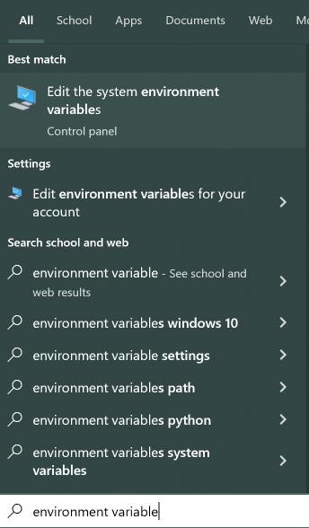
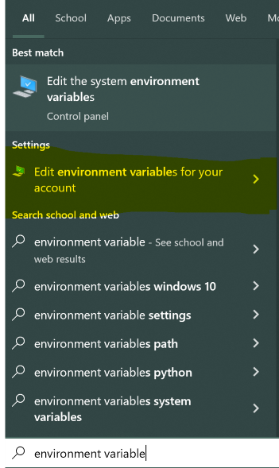
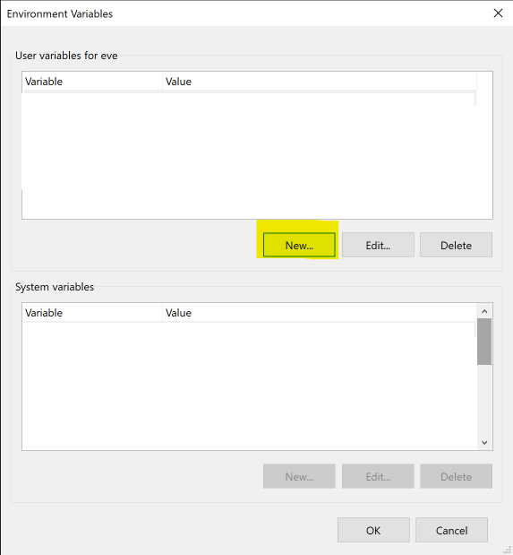
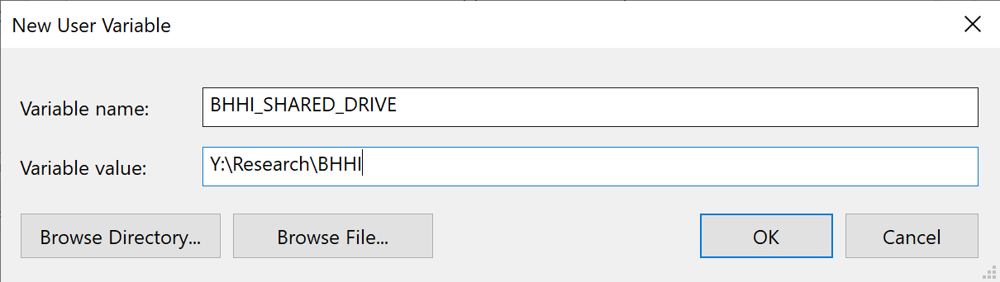
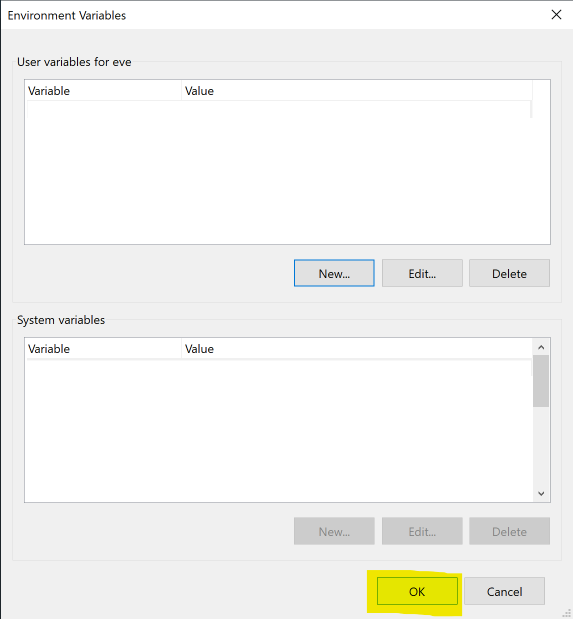

This is the BHHI guide to writing Stata code. Its goal is to create consistency in our code and to make our code more readable and understandable for each other and for our future selves.
The guide draws heavily on the R Tidyverse style guide by Hadley Wickham (license), with modifications for the Stata language.
Files
Names
File names should be meaningful and end in .do. Avoid using special characters in file names - stick with numbers, letters, -, and _.
// Good
fit_models.do
clean_data.do
// Bad
fit models.do
foo.do
stuff.doIf files should be run in a particular order, prefix them with numbers. If it seems likely you’ll have more than 10 files, left pad with zero:
00_download.do
01_explore.do
...
09_model.do
10_visualize.doIf you later realise that you’ve missed some steps, it’s tempting to use 02a, 02b, etc. However, we think it’s generally better to bite the bullet and rename all files.
Pay attention to capitalization, since you, or some of your collaborators, might be using an operating system with a case-insensitive file system (e.g., Microsoft Windows or OS X) which can lead to problems with (case-sensitive) revision control systems. Prefer file names that are all lower case, and never have names that differ only in their capitalization.
File paths
Always use relative file paths in code instead of absolute file paths. Relative file paths are, as the name suggests, relative to the current working directory. Relative file paths look like data/example_dataset.dta whereas an absolute path is something like Y:\example_project\data\example_dataset.dta on Windows or /Users/Eve/example_project/data/example_dataset.dta on a Mac.
The only exception is shared resources like datasets used across multiple projects or analyses (eg. the Statewide Survey dataset).
We avoid absolute file paths, people on different operating systems will have trouble running code with absolute paths. If you are on a Mac, there’s no way to setup your system to be compatible with Windows and vice versa. Also, sometimes you move project directories, and if your code has absolute paths, you’ll have to change each on to get the code working again.
Relative paths assume that Stata’s working directory is the root of the project directory and it is the person running the code’s responsibility to make sure they are in the correct working directory. With relative paths code can be shared across operating systems and be moved without major headaches and bugs.
On the same note, your code in a do file should never change the working directory. It’s rude to mess with someone else’s working setup and is likely to cause path compatibility problems. If you find yourself using cd in your code, there’s probably another way to accomplish what you’re trying to do that doesn’t involve changing the working directory.
Absolute file paths
There is one situation where we need to use absolute file paths: shared data resources. These are datasets used across multiple projects or analyses that need to live in one place. In these cases, the data won’t be in the project directory so we can’t use a relative path. A good example are the Statewide Survey datasets.
We still want our code to work across operating systems (we’re already writing and sharing code that runs on Windows, MacOS, and Linux!), so even when we use absolute paths we need to be careful to preserve OS portability.
We use operating system environmental variables to accomplish this. All operating systems (at least the ones we use) support environmental variables and they store a string in a named variable. So we individually set the path to our shared drive as an environmental variable and then in our code reference the environmental variable to get to the shared drive. This allows the paths to work across operating systems and doesn’t require us to have the same shared drive setup.
To make things easy we standardize the name of the environmental variable and load the path to the shared drive into a Stata global variable, which is easier to use in code. We call the environmental variable BHHI_SHARED_DRIVE and set it in the global variable ${bhhi_shared_drive}. Here’s the code snippet:
global bhhi_shared_drive : env BHHI_SHARED_DRIVEAdd this line your profile.do file and it will run everytime you start Stata and the ${bhhi_shared_drive} global variable will always be available for you. For example:
use "${bhhi_shared_drive}/statewide_survey_processed_data/latest/statewide_survey_processed.dta"The profile.do file needs to live in your home directory so Stata can find it. If you don’t already have a profile.do file (it’s not created by default) just add it yourself.
On Windows, it’s location probably looks like this: C:\Users\eve\profile.do
On Mac, it’s location probably looks like this: /Users/eve/profile.do
Setting the environmental variable
- Hit the Windows key or button and type “environment variable”.

Click ‘Edit environmental variables for your account’.

Click ‘New’ in the upper panel.

Enter
BHHI_SHARED_DRIVEin the Variable Name field and the path to theResearch\BHHIfolder on the shared drive (ie.Y:/Research/BHHI) in the Variable Value field. Then click OK.
Click OK in the bottom right of the window.

- Open or create the
~/.zshenvfile in a text editor. - Add the following line (replacing
PATH TO SHARED DRIVEas appropriate):export BHHI_SHARED_DRIVE="PATH TO SHARED DRIVE"
Internal structure
Use commented lines of - and = to break up your file into easily readable chunks.
// Load data ---------------------------
// Plot data ---------------------------If your script uses external .ado files or packages, note their use in a comment at the top of the file so others can ensure they have those files or packages installed.
Syntax
Variable names
Stata has rules for variable names:
- Names can only contain letters, digits, and underscores (
_) - Names can only begin with a letter or
_ - Names can only be 32 characters long
We have a few additional standards for variable names:
- Only use lowercase letters, numbers, and
_ - Use
_to separate words within a name - Avoid starting variable names with an
_(because these are typically used for built-in variables)
// Good
day_one
day_1
// Bad
DayOne
dayone
_1_daySpacing
The spacebar is your friend! Putting spaces in your code makes it more readable and easier to understand, both for others and for your future self.
Operators
Most operators (+, -, =, ==, <, <=, etc.) should have spaces on both sides.
// Good
gen test = 1
gen addition = foo + bar
gen variable_high if variable > 1000
replace fruit = "apple" if fruit != "banana"
// Bad
gen test=1
gen addition = foo+bar
gen variable_high if variable>1000
replace fruit="apple" if fruit!="banana"Parentheses
Do not put spaces inside or outside parentheses for function calls.
// Good
egen mean = mean(lexp)
// Bad
egen mean = mean (lexp)
egen mean = mean( lexp )Commas
Always put a space after a comma, never before, just like in regular English.
// Good
tab foo bar, row
// Bad
tab foo bar,row
tab foo bar , rowLoops
Try to avoid repeating yourself when writing code. If you find yourself cut and pasting a single line multiple times, consider if it’s possible to use a loop.
It’s much easier to make changes to code that uses loops, than when lines are repeated multiple times with small alterations.
When writing loops, put the for statement on its own line with a space before the { and then indent the code in the loop before closing the loop with the } on its own line.
// Good
foreach var in foo bar biz {
replace `var' = `var' + 1
}
// Bad
replace foo = foo + 1
replace bar = bar + 1
replace biz = biz + 1
foreach var in foo bar biz{
replace `var' = `var' + 1
}Commands
Stata doesn’t require you to type the full name of a command (ie. generate, gen, and g are all legal ways to invoke the generate command).
There is a tradeoff here between typing ease, readability, and Stata conventions. It’s annoying to type the full name for some commands (especially frequently used ones), but cutting the name too short hurts readability.
To balance this tradeoff, use at least 3 characters of a command’s name and strongly consider using the full name for less common commands.
// Good
gen foo = 1
generate foo = 1
tab foo bar
tabulate foo bar
// Bad
g foo = 1
ta foo barSemicolons
Unless you have a good reason don’t use semicolons (;) to denote line ends. Most of the time you should use the line continuation operator (///) if your command needs to stretch over more than one line.
And never use semicolons to put multiple commands on one line.
// Good
gen one = 1
gen two = 2
tabstat variable_1 variable_2 variable_3 ///
variable_4 variable_5 variable_6, stats(mean)
// Bad
#delimit ;
gen one = 1;
gen two = 2;
gen three = 3; gen four = 4;
// Avoid
#delimit ;
tabstat variable_1 variable_2 variable_3
variable_4 variable_5 variable_6, stats(mean);
#delimit crLong lines
Try to keep individual lines of code to 80 characters. This is a standard across many languages that makes it easier to read and review code.
Comments
Comments should describe why you are writing a particular piece of code that needs additional explanation, not how the code works. The code itself explains the how but commenting the why (especially if doing something non-standard) is most useful for another person or your future self.
When using comments to record notes on the analysis, don’t just rely on adding dates, be proactive on removing comments once the code changes and the comment is no longer relavent.
But strongly consider using
dyndoc(Stata markdown) for analysis notes. This format combines both code, output, and explanation text in one document that makes it much easier to understand what’s happening than code comments and a log file.Single-line comments
Use
//instead of*for line comments. While you can start a line comment with*in Stata, it’s not a good idea because it’s too easily confused with multiplication.Multi-line comments
Use
/*and*/for multi-line comments